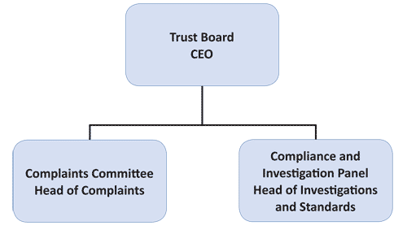

CHAPTER 2
THE SELF REGULATORY MODEL PROPOSED BY THE PCC AND PRESSBOF
1. Industry acceptance of the need for reform
1.1 In the early days of the Inquiry I made it clear that I was keen that the press industry should come forward with a credible proposal for the future regulation of standards across the press. I said that it was critical that the press should engage in the debate about how its regulation should move forward,1 that this was a problem for the industry and that the industry had to solve it.2 I also explained that it was important that a solution should be found which worked both for the press and for the public and I looked to the press to come forward with proposals that would fit that brief; however, in the meantime I would continue looking for ways to improve the system.3 It is difficult to find an objective test for what ‘works for the public’. The public have three distinct roles here: first as readers of newspapers, second as citizens of a democratic country and third as the people about whom newspapers write. It is important that the interests of the public in all three roles are recognised and protected: the Prime Minister said that the test must be whether a solution works for the Dowlers and the McCanns.4
1.2 It has been common ground that PCC does not offer a credible form of self-regulation and that significant change is needed. The current PCC Chair, Lord Hunt agreed that “tinkering around the edges” would not be sufficient and that this was an opportunity for the press to come forward with “the sort of system Sir David Calcutt was asking for.” 5 Lord Black, Chairman of the Press Standards Board of Finance (PressBoF), said he had never believed the PCC to be a regulator,6 and accepted that the PCC had failed:7
“The evidence submitted throughout the Inquiry into Press Standards has made clear that the Press Complaints Commission ultimately failed. While it had some significant achievements to its name, particularly in its early years, it proved incapable of dealing with the major ethical and cultural issues that have arisen in recent times. The scandal of phone hacking – and the PCC’s inadequate response to it – underlines that point. As a result, the existing system lost the confidence of Parliament, of the public and of the judiciary, all of whose support is essential if self regulation is to flourish. Crucially, the Commission also lost the support of parts of the newspaper and magazine publishing industry. The industry accepts the need for wholesale change, but within the framework of self regulation.”
1.3 In recognition both of the failure of the current system of ‘self-regulation’ and the need for an industry generated proposal for the future, Lord Hunt developed a set of proposals which have been further developed by Lord Black, on behalf of the industry. A version of that proposal, representing the fruits of over 12 months work by the industry, has been submitted by Lord Black as “working documents in draft” .8 There has been a process of consultation with many parts of the industry, resulting in the following statement from the Newspaper Society, the Newspaper Publishers Association (NPA), the Scottish Daily Newspaper Society and the Professional Publishers Association:
“While a lot of detailed work is still to be done, the proposals have the broad support of the organisations and their members. The proposals are being further developed in the light of comments received as part of the ongoing consultation process. This process will take into account the deliberations and recommendations of the Leveson Inquiry and the Government responses to its findings.”
1.4 It is important to recognise that publishers have not yet been asked to sign the contracts that underpin this proposal (so that at the time of publication of this report it remains open to doubt, if not considerable doubt, as to precisely what a final agreement might look like, or even whether such an agreement could be reached and which publishers would be willing to join). This Section of the Report looks at the proposal as it was submitted to the Inquiry.
2. The proposal: overview
2.1 The proposal is based on a voluntary model described by Lord Black as “independently led self-regulation”. The key features are: (a) the creation of a new self-regulatory body, under an independent Trust Board, with greater independence from the industry than the PCC currently has and the power to impose fines for particularly serious or systemic failures; (b) a contractual relationship between the regulated body and each of the publishers to provide for medium term commitment to the system; (c) a continuation of the complaints handling role of the PCC; (d) the creation of a separate arm of the regulator with powers to investigate serious or systemic failures; and (e) the establishment of a new industry funding body to provide financial stability for the regulatory body.
2.2 The proposal is set out in full in Lord Black’s submission,9 together with a draft contractual framework,10 draft Articles of Association of the new Regulator11 and draft Regulations12 that the members (or ‘regulated entities’) would have to comply with. Here I describe the key relevant features of the proposal in order to consider the extent to which it is capable of delivering the objectives set out earlier.13 They will be analysed later in the Report.14
3. Governance and structures
3.1 Figure K2.1 below provides a pictorial representation of the composition of the various bodies and how they relate to each other. The regulatory body itself is comprised of the Trust Board, which has overall responsibility for the self-regulatory regime, with subcommittees dealing with complaints and compliance and investigations respectively. Sitting outside the self-regulatory body are the Industry Funding Body (IFB), which is responsible for setting and delivering the funding for the regulatory body, and the Code Committee, which is responsible for agreeing the Code with which all regulated entities will have to comply.
The Independent Press Trust
3.2 The Independent Press Trust will be established as a Community Interest Company.15 The draft Articles of Association set out the objects of the Trust:16
The objects of the Company are to carry on activities which benefit the community and in particular to promote and uphold the highest professional standards of journalism in the United Kingdom, the Channel Islands and the Isle of Man, including by:
- Establishing the Regulatory Scheme for regulating Regulated Entities;
- Promoting compliance with the Editors’ Code of Practice;
- Encouraging conciliation between Regulated Entities and complainants;
- Investigating and adjudicating on complaints from the public about Regulated Entities;
- Publishing its findings; and
- In accordance with the Regulatory Scheme, levying fines on Regulated Entities found to be in significant, systemic breach of the Editors’ Code of Practice, such fines to be proportionate to the nature and effect of the breach;
having regard at all times to the importance in a democratic society of freedom of expression and the public’s right to know.
3.3 The principle decision making body of the Trust would be the Trust Board17 with a Complaints Committee which would have primary responsibility for dealing with public complaints and an Investigations and Compliance Panel.18 Operationally the Trust would be run by a Chief Executive Officer (CEO), who would be appointed by the Board and report to them. There would also be a Head of Complaints, supporting the Complaints Committee, and a Head of Standards and Compliance, supporting the Compliance and Investigation Panel, who would each report to the CEO and ultimately to the Board. 19, 20
Trust Board Ceo Compliance and Complaints Committee Investigation Panel Head of Complaints Head of Investigations and Standards
Figure K2.1: Structure of the Independent Trust
3.4 The Trust will be able to cover companies in the UK, the Channel Islands and the Isle of Man who are responsible for publishing printed newspaper or magazine titles in the UK, and their related websites, and web only publisher or news aggregators with content viewable in the UK.21 Membership will not necessarily be open to any company meeting those criteria. The Industry Funding Body would have:22
“ultimate discretion to refuse membership to any publishers wishing to join the scheme, even if such a publisher falls within the definition of a regulated entity.”
3.5 In his oral evidence Lord Black explained that this provision was in order to allow membership of the Trust to be refused to what he described as “top shelf publications” whose membership would be “wholly inappropriate” as the only complaints in relation to them were likely to be about taste and decency.23
3.6 As drafted, this provision does not appear to place any restrictions on who could be refused membership by the IFB, or on the reasons for such a refusal. Neither does it allow the Press Trust itself any say in whether membership should be granted to an applicant. This could be an issue of particular concern if there were significant benefits to membership, or disadvantages attaching to non-membership.
3.7 In terms of content, the remit of the Trust covers editorial content in printed newspapers and magazines (but not books) and on websites and apps.24 The Trust would not cover broadcast content, advertising, taste and decency, impartiality, copyright issues or employment issues. In addition, the Trust will not cover issues in relation to current or possible criminal proceedings. The Trust will not cover non editorial content in newspapers or magazines, or content over which the publisher has not exercised editorial control.25
3.8 The functions of the Trust are to deal with complaints and mediation and to deal with standards and compliance.26 These are dealt with in more detail below.27
The Trust Board
3.9 It is proposed that the Trust Board will guarantee the independence of the new system. It will be responsible for the management of the company’s business, specifically supervising the governance of the company, managing its finances and audit, being responsible for the appointment of independent members, and liaising as necessary with the industry’s trade associations.28 The Trust Board has no role in the investigation of individual complaints from members of the public. By contrast, the Trust Board has to trigger any investigation into serious or systemic breach. The Trust Board is also responsible for establishing any appeal panel in relation to an investigation and for exercising the power of sanction in response to an investigation where that is appropriate.29
3.10 The ‘Regulator’, or in practice the Trust Board, will have responsibility for any changes to the Regulations, although any such changes must be approved by the IFB before they are made.30
3.11 The Trust will not be responsible for the Editors’ Code of Practice31 but any changes to the Code will have to be ratified by the Trust Board before they come into effect.32
The Trust Board: membership and appointments
3.12 The Trust Board is to comprise seven directors, four of whom (including the Chair) are to be independent, and three of whom are to be press directors.33 Members will serve a three year term, renewable once.34 No Trust Board member has more than one vote. The Chair has a second and casting vote in the case of a tied vote.35
3.13 The appointment of the Chair would be by a four person panel comprised of two industry members, appointed by the IFB, and two lay members, entirely independent of both the industry and the Trust and appointed by the Trust Board.36 The panel would appoint a search consultant to draw up a shortlist for the post of the Chair. The panel would then interview the shortlisted candidates and make the appointment by unanimity.37
3.14 The three other independent members of the Trust Board are to be appointed through an independent appointments process determined by the Trust Board itself.38 A ‘shadow’ Trust Board will be set up by Lord Hunt to manage the first appointments process. Once the first permanent appointments have been made the Shadow Board will be disbanded.39 The submission does not say whether the panel to appoint the first Chairman will be appointed by the Shadow Board or the first permanent Board appointees. The three press members of the Trust Board will be appointed by the IFB and are expected to be individuals with senior editorial or publishing experience but not currently serving editors.40
Relationship between the Trust and publishers ‘regulated entities’
3.15 Publishers who join the Trust will be required to enter into a contract with the Trust which will require the publisher to:41 (a) comply with the Editors’ Code; (b) comply with the Regulations; (c) cooperate with any standards investigation; (d) abide by the Trust’s decisions; and (e) commit to funding for the period of the contract.
3.16 The Regulations set out the remit and functions of the Trust, the procedures for handling and mediation of complaints, the procedures for any investigations, the powers of the Investigations and Compliance Panel, the powers of the Board to impose sanctions, including fines, and the detail of the annual certification process.42 All this is, therefore, contained within the contractual framework. The Regulations are the responsibility of the Trust, but can only be amended with the approval of the IFB.43 The contract will also set out the obligations of the Trust to deal fairly and proportionately with the contracting parties.44
3.17 The original contract will be for a minimum of five years from the inception of the system45 and then continue on an annual rolling basis.46 Contracts will be between the publisher and the Trust and all contracts will be identical.47 The Trust has the right, as one of its powers of sanction, to terminate the contract with an individual publisher.48 An individual regulated entity has no power to terminate the contract.49 If a majority of contracting parties agree to terminate the contract then all contracts can be terminated on 12 months notice, although not before the expiry of the original five year term.50 The contracts can be varied by a majority of contracting parties, and where that is agreed the other contracting parties will be bound by the change.51 If a contract is terminated, the contracting party is still liable in respect of the time during which they were party to the contract.52 If a title is transferred then the regulated entity has an obligation to use all reasonable endeavours to ensure that the new owner enters into a contract with the Trust.53
3.18 A ‘majority’ for the purposes of contract variation and termination is yet to be defined.54 Lord Black explained that this would not be a simple majority of members, as that would mean the magazine sector would have the ability to outvote the rest of the members. Instead there would need to be a system of weighted votes that would give no sub sector the power of veto over changes and that would reflect the nature and diversity of the market.55
3.19 The regulated entities have no contractual liability towards each other.56 The Regulator has no liability for failure to exercise its powers and functions,57 and third parties have no rights under the contract,58 so victims of press abuse and those complaining about press behaviour have no enforceable rights under this system. It has been suggested that the Trust could be subject to judicial review and Lord Black said that the industry would be unlikely to contest the justiciability of the body if an action for judicial review were brought.59
4. Complaints
4.1 There would be a Complaints Committee composed of 13 members: the Chair of the Trust, seven independent members, and five serving editors (two nationals, one Scottish, one regional and one magazine). The independent members would be appointed by the Trust. The industry members are to be nominated by their trade associations.60 As with members of the Trust Board, members of the Complaints Committee would serve for a three year term, renewable once.61
4.2 Lord Black describes the proposed complaints handling regime as “building on the widely regarded conciliation techniques of the PCC” . 62 In a departure from current practice it is proposed that wherever possible a complaint should be handled directly by the editor of the publication concerned, and that only where a complaint cannot be resolved bilaterally should it become a matter for the regulator.63 Lord Black recognises that this would require the strengthening of internal compliance systems within publishers and argues that the new regulatory structure, including the annual compliance reports,64 would support this.65
4.3 The Trust will consider complaints about the failure of a regulated entity to meet the standards set out in the Editors’ Code. Complaints will be accepted from people who have been directly affected by the matters complained of. In addition, the Head of Complaints will have discretion to consider third party complaints where there has been a significant breach and there is substantial public interest in allowing the complaint to be brought.66 In his oral evidence Lord Black said that third party complaints on accuracy were currently accepted by the PCC, that that practice would continue under the proposed model and that the draft regulations were not intended to restrict that practice.67
4.4 A complaint must be made within two months of the date of first publication of the article complained of, or within two months of the end of correspondence between the complainant and the publisher, as long as that correspondence was started straight after publication.68 Where the disputed article is published online and remains online at the time of the complaint, the Head of Complaints may consider the complaint if the company declines to remove the article.69
4.5 The proposed process appears to mirror closely the existing PCC approach. Once a complaint has been accepted by the Head of Complaints, the Trust will write to the regulated entity with a copy of the complaint. The company must then respond and a copy of that response is sent to the complainant. Any response from the complainant then goes back to the company. If the complaint has not been resolved by that stage then the primary aim of the Trust is to find a mediated resolution. If mediation is successful then a summary of the outcome would be published on the Trust’s website. If mediation is not successful the complaint is passed to the Complaints Committee.70
4.6 The Complaints Committee must decide whether or not there has been a breach of the Code. If the Code has not been breached then the Committee will reject the complaint. If the Code has been breached then the Committee must take a view on whether sufficient remedial action has already been taken. If the Committee considers that the breach has been remedied then the Head of Complaints must decide whether it is appropriate for details of the outcome to be published on the Trust’s website, but no other action is taken. If the breach has not been remedied then the Committee will make a public ruling upholding the complaint. The company will be obliged to publish the critical ruling with due prominence.71
4.7 Due prominence is to be interpreted in line with the Code.72 The current PCC practice under the existing Code is that the prominence of publication of critical adjudications to be agreed between the PCC and the publisher. Lord Black explained that it would be for the Trust to negotiate any changes to the Code in this respect with the Code Committee.73 The proposal itself does not give the Trust any powers to insist on the location or prominence of the publication of an adjudication.
4.8 The sanctions available to the Trust in relation to complaints may include informal resolution, published apologies, a formal reprimand and critical adjudication.74 The Trust will have no power to award compensation to a complainant.75 Neither will the Complaints Committee have any power to levy a fine. In the case of a particularly significant breach of the Code, the Trust may instigate an investigation which would then bring other sanctions into play.
4.9 The complainant will have the right, within 14 days of the original decision, to appeal the decision to an Independent Assessor. The Independent Assessor will have the power to confirm the decision of the Complaints Committee or refer it back to the Committee with a different decision.76 The publisher has no right of appeal against a decision of the Complaints Committee.77
4.10 The Independent Assessor will be appointed by the Trust Board for a three year term, renewable once. The Assessor must not be a member of the Complaints Committee and must not be connected with the industry.78
5. Standards and compliance
5.1 As explained above,79 there will be a Head of Standards and Compliance, and it is proposed that there will be a small number of full time staff within the Trust who would service the Investigation and Compliance Panel. The Compliance Panel, however, would not be a permanent body but would be created on an ad hoc basis when required.80 Despite this ad hoc existence, the Panel would have a number of ongoing core functions assigned to it according to Lord Black’s submission. These would include:81 (a) “overseeing the process of annual certification by publishers about ethical and governance issues among their titles; (b) monitoring and analysing the responses to that process and taking up issues that arise from them; (c) monitoring trends in individual complaints dealt with by the Complaints Committee to detect issues of concern on individual titles or across individual publishers; and (d) analysing public or Parliamentary reports about press standards within specific areas to see if there is a substantive compliance issue highlighted by the that requires investigation.”
5.2 In each of these areas the Panel is expected to make recommendations to the Trust Board if they feel that an investigation should be undertaken.82 If the Board agrees that an investigation is appropriate they will then appoint an Investigation Panel from within a pool of experts, drawing on appropriate experience and expertise.83 There is an obvious scheduling difficulty here, since the recommendation that an investigation be carried out has to be made by the Panel, but a Panel is not appointed until the Board has authorised an investigation. In practice it is likely that the core functions described above would sit with the Head of Investigation and Compliance and its small staff. It is not entirely clear whether this executive team would be overseen on an ongoing basis by a public member of the independent Trust Board, appointed by the Trust Board.8485
Annual certification and compliance
5.3 Each regulated entity will have to submit an annual statement of its editorial practices covering the following information:86 (a) concise factual information about the publisher, including the titles published and their circulation, and the name of the publisher’s compliance officer; (b) copies of relevant manuals, codes or guidance; (c) brief details on compliance processes, including how the publisher deals with pre- publication advice, verification of stories, compliance with the Editors’ Code, editorial complaints and the training of staff; (d) details of any incidents during the year involving a material breach of the Editors’ Code or the Regulations, and the measures taken in relation to such breaches; and (e) details of the steps taken in response to any adverse adjudications by the Trust during the year. The requirement to compile and submit this annual statement is set out specifically in the draft contract framework, together with requirements on the regulated entities to use their best endeavour to ensure full cooperation with, and disclosure to, the Trust.87
5.4 The matter of whether these annual statements would be made public is left open. Lord Black told the Inquiry that the assumption was that the document would be published, with only commercial or personal confidential information redacted.88 The draft Regulations leave publication of the annual reports to the discretion of the Trust.89
5.5 When the Trust receives the annual reports they would be reviewed by the Head of Standards and Compliance, who would raise any concerns directly with the company involved, before putting a report to the Trust which would identify any issues of concern or that require further investigation.90
Requirement for a named compliance officer
5.6 The draft contractual framework requires the appointment within each regulated entity of a senior individual who will take responsibility for ensuring that the regulated entity, and all its staff and subcontractors, comply with the contract.91 Lord Black describes this role as having responsibility for overseeing monitoring and compliance.92
Investigations
5.7 Both the structural aspects of the standards and investigations arm of the proposed Trust and the proactive compliance requirements placed on regulated entities are set out above.93 The Trust also has its own proactive powers of investigation, over and above specific reactive response to complaints, where there is cause for concern. An investigation by the Trust may be triggered in the following circumstances:94 (a) “where it appears there have been significant systemic breaches of the Editors’ Code or in general of ethical behaviour; (b) where serious breaches of the criminal law have been found by the courts; or (c) where annual certification identifies significant and substantive issues of concern in relation to a single incident, compliance processes or a long term pattern of code breaches.” This list of circumstances in which an investigation may take place is not exhaustive.
Investigation process
5.8 Where it appears to the Investigation and Compliance Panel (the structural difficulties in this are noted above)95 that there is a need for an investigation into a particular publisher for one of the reasons above, they would make a report to the Trust Board, together with a recommendation for an investigation.96 The Trust Board can instigate an investigation in response to a recommendation from the head of Standards and Compliance or on its own initiative.97
5.9 If the Board believes that a full investigation is required, it would decide the remit and terms of reference for an investigation. It would then write to the proposed subject of the investigation, setting out the remit and terms of reference, and explaining why an investigation was thought necessary. The Trust Board will then take any response from the regulated entity into account in reaching its decision on whether to instigate an investigation.98
5.10 Once the Trust Board has decided that an investigation should take place they appoint a member of the Trust Board to have “day to day oversight” of the investigation, which is undertaken by the Head of Standards and Compliance.99 At the same time, the Trust Board must appoint an Investigation Panel. The Panel will comprise three people, two of whom will be public representatives with no connection to the press; and the third an individual with a senior newspaper or digital background, but not a serving editor.100 The Panel are all to be appointed from a pool of people with relevant expertise whose names will be published.101
5.11 The investigation would be carried out by the Head of Standards and Compliance, who must ensure that the investigation is independent, proportionate, fair, objective, open-minded and consistent.102 In pursing the investigation the Head of Standards and Compliance can request documents, answers to questions and access to key personnel. If the subject of the investigation refuses to provide the information required then the fact of the refusal, and the reasons for it, will be notified to the Investigation Panel.103 The Panel, however, have no role in resolving the situation.
5.12 If there is any dispute between the Head of Standards and Compliance and the subject of an investigation about the scope of an investigation, that dispute would be referred to the Trust Board. If the subject of the investigation continues to refuse to provide documents that the Head of Standards has properly requested then the Trust can take legal action under the contract for specific performance. A decision to bring legal proceedings to compel production of documents has to be approved by the Trust Board. There is no equivalent power to seek specific performance in relation to access to personnel.104
5.13 Once the Head of Standards and Compliance has completed his investigation he would prepare a report detailing the conclusions and any recommendations. That report would be provided to the subject of the investigation, who then would have 28 days to provide written submissions to the Investigation Panel. The Investigation Panel would meet to consider the report from the Head of Standards and Compliance, together with any representations received from the subjects of the investigation.
5.14 At that meeting the Investigation Panel would “in most cases” hear a presentation on the report from the Head of Standards and Compliance. It is not clear in what circumstances a presentation from the Head of Standards and Compliance would not be appropriate. In all cases the Panel will invite representatives from the subject of the investigation to attend the meeting, where they will be entitled to make representations and they could be asked questions by the Panel. The representatives of the subject of the investigation would leave the meeting when the Panel discusses and reaches its decision.105
5.15 At the meeting the Panel can request further work to be done, or it can reach a preliminary conclusion. The conclusions open to the Panel are:106 (a) that there is no evidence of any, or of significant, wrongdoing; (b) to make non-binding recommendations about best practice, whether directed specifically at the subject of the investigation or at the industry more generally; (c) to reprimand the subject of the investigation; (d) to refer a systemic failure to the Trust Board to consider a fine; (e) to direct the publication, by the subject of the investigation, of a summary of the Panel’s finding. The wording and prominence of that publication are to be agreed between the regulated entity and the Trust Board; (f) to refer the matter to the Trust Board to consider a cost contribution; or (g) to require undertakings from the subject of the investigation in respect of future conduct. Further consideration of these sanctions is made below.107
5.16 The decision of the Panel must be sent in draft to the subject of the investigation, who has 14 days to make comments on the draft, including correcting mistakes or arguing that anything has been misunderstood or that incorrect conclusions have been reached. Having received those representations the Panel will then reach a final decision.108
5.17 The subject of the investigation can ask for a review of that decision by writing to the Trust Board within 14 days of receiving the decision of the Panel. A review can be sought on the grounds that either the process or the decision were fundamentally flawed.109 The Trust Board will consider the evidence, including any new evidence submitted to it, and decide whether to accept the review request. If the Trust Board accepts the review request then they will establish a Review Panel.110 The composition of a Review Panel is exactly the same as that of an Investigation Panel but must not contain any of the members of the original investigations panel.111
5.18 The Review Panel would consider all the information provided to the Investigation Panel and, at their discretion, any new evidence provided. The draft decision of the Review Panel would be sent to the subject of the investigation who will have 14 days to make representations including, as at the earlier stage, to correct any mistakes, argue that anything has been misunderstood or that the wrong conclusions have been reached.112
5.19 The Review Panel would consider any representations made by the subject of the investigation and then reach a final conclusion, against which there is no further right of appeal.113 There is no role in this process for anyone who has been the victim of any of the behaviour under investigation. Complainants have no power to submit evidence or to provide submissions on the decisions.114 Complainants will generally not be aware of an investigation until a final decision is published.
5.20 The decision of the Investigation Panel, or, if there is a review, the decision of the Review Panel, and the reasons for it, would normally be published.115
Sanctions
5.21 The range of sanctions available to the Trust starts with a ‘reprimand’ about which no further information is provided. It is not clear how a reprimand would be issued, or whether it would be published, although publication of a summary of the Panel’s findings is also an available sanction. The Trust can also require, and monitor, undertakings in respect of future conduct.
5.22 If the Investigation Panel (or the Review Panel) concludes that there has been a systemic failure the Trust Board has the power to levy fine on the relevant regulated entity.116 A ‘systemic failure’ is one:117
“where it appears there has been one or more significant or serial or widespread breach or breaches of the Editors’ Code or of ethical standards which indicate a systemic or serious failure at one or more Regulated Entity”.
5.23 The Trust Board would decide the level of the fine. The criteria to be followed by the Trust Board in determining the level of fines is to be set out in the Financial Sanctions Guidelines. The Financial Sanctions Guidelines are to be issued by the IFB.118 A draft of those guidelines has been provided and would allow the Trust Board to impose a fine of up to 1% of the turnover related to the publication found to have committed a systematic failure up to a maximum of £1,000,000.119
5.24 In setting the level of any fine the Trust Board has to take account of the following factors:120 (a) the nature of the regulated entity; (b) the nature of the systemic failure and its impact; (c) whether the systemic failure was inadvertent or deliberate or reckless; (d) any aggravating or mitigating factors (including whether the regulated entity brought the failure to the attention of the Trust, cooperation with the investigation, whether the management were aware of the failure and what steps, if any, they took to prevent it, and the previous record of the publisher); (e) any adjustments for deterrence; and (f) any discounts for early settlement.
5.25 Finally, it is open to the Trust Board to require the regulated entity to make a contribution to costs. The Regulations indicate that there will be separate guidance on how the Trust Board should determine a cost contribution, but this is not covered in the material provided to the Inquiry.121
6. Potential for growth
6.1 The proposal allows for the addition of an arbitral arm to deal with matters of libel and/ or privacy issues. Lord Black states that a proposal along these lines has not been included in the submission to the Inquiry because the nature of any such arbitral system would be dependent on changes to the law, including the Defamation Bill currently before Parliament. The Inquiry is told that the industry is keen to pursue this option and is satisfied that the proposal submitted is sufficiently flexible to allow for such a development.122
7. Funding
7.1 The proposed system would be fully funded by the industry through the payment of membership fees to the Trust. The funding arrangements for the standards and compliance part of the structure are slightly different, and are explained below, but again the process is fully funded by the industry. Lord Black, on behalf of the industry, has said that it would be inappropriate for the taxpayer to make any contribution towards a system of self-regulation. Similarly, it would be wrong to require complainants to pay any charge in relation to complaints. The fully funded self-regulatory proposal is submitted to the Inquiry as a sign of the industry’s commitment to protecting the public and putting right things which have gone wrong.123124
7.2 The funding for the Trust will be guaranteed as part of the contract. Publishers will commit to making payments for the duration of the contract.125 The core cost (excluding compliance and standards work to be funded separately) is estimated to be around £2.25 million per annum.126 The fees payable by each publisher will be calculated according to an “agreed formula”.127 That formula is to be set by the IFB and can be changed at their discretion.128 Lord Black has told the Inquiry that it is:129
“impossible to predict how [the costs of the new system] might be fairly and proportionately divided within the industry.”
7.3 At a subsectoral level, the shares of the cost of the PCC are generally 54% for national newspapers, 39% for Scottish and regional newspapers, and 7% for magazines. These proportions have changed for the 2012 financial year, with national newspapers taking a 59.1% share, Scottish and regional newspapers a 34.4% share and magazines a 6.5% share.130 The current distribution of costs for the PCC between national newspapers has never been disclosed on a publisher by publisher basis as they are considered to contain commercially confidential information.131 The Inquiry has been told that the national newspaper publishers are currently looking at the funding formulae to see how they could better reflect the realities of new business models.132 Lord Black expressed the hope that whatever funding formula emerges from this process it might be possible to be more transparent about precisely who was paying what.133
7.4 The IFB will publish the list of publishers who have signed a contract with the regulator and an annual record of the proportions of funding met by different parts of the industry.134
7.5 The IFB has the responsibility both to set the formula and to collect the membership fees from the publishers. There is no mechanism set down for the IFB to agree the overall level of funding with the Trust Board. Lord Black explained that the core costs are expected to be reasonably predictable at £2.25m,135 that these were significant sums for the industry in the current commercial climate,136 but that he had no doubt that sufficient funding would be made available to allow the regulator to fulfil its function.137
7.6 The standards and compliance costs are more difficult to predict and consequently will be subject to a different funding approach.138 The Trust will be established with a ring-fenced enforcement fund of £100,000 to cover the costs of the Investigations and Compliance Panel. It is anticipated that, over time, the costs of the compliance arm will be met from fines levied on publishers found responsible for wrong doing. Once the enforcement fund reaches £500,000 the original £100,000 contribution will be repaid to its initial contributors.139
8. The Code and the Code Committee
8.1 The whole proposal relies on the existence of the Editors’ Code as the statement of standards to which publishers commit when entering into a contract with the Trust. The Editors’ Code is currently owned by the Code Committee, which is comprised of 13 serving editors, drawn from across the industry.140 Under the proposal, that structure would remain in place, but there would be five additional members: the Chair and the Chief Executive of the Trust, and three further public members appointed by the Trust Board. The Chair of the Code Committee would be elected by the members of the Committee from among the editorial members.141
8.2 Under the draft contractual structure the Code is the responsibility of the IFB, although the relationship between the Code Committee and the IFB is not spelled out in detail. Any changes to the Code would need to be approved by the Trust Board before they could come into effect.142
9. The Industry Funding Body
9.1 The model presented is one of “independently led self-regulation”.143 The industry is represented in the system largely by the IFB, which has various roles and responsibilities. Each of those roles have already been touched on in the paragraphs above, but this section sets out the totality of the IFB’s role in relation to the proposed self-regulatory regime.
“In any self-regulator regime there will always be a need for the industry to be involved in some way. In this case, the publishing industry’s chief involvement will be through the operation of the Code Committee [….] and some form of industry co-ordination body to be responsible for funding. This is currently provided through the Press Standards Board of Finance. Its structure and role may change so for the purposed of this note this entity is referred to as the Industry Funding Body.”
9.3 The IFB is obviously responsible for setting and collecting the membership fees. The IFB would set both the overall level of funding to be provided to the Trust and the distribution of that funding between the regulated entities.145
9.4 The IFB has the power to enforce the contract between a publisher and the Trust in respect of the payment of the membership fee.146
9.5 The IFB is responsible for the Editors’ Code. Any changes to the Code will have to be approved by the Trust Board.147
9.6 The IFB is responsible for appointing the two industry members of the appointment panel that appoints the Chair of the Trust.148
9.7 The IFB must approve any changes to the Regulations.149
9.8 The IFB is responsible for the Sanctions Guidance which will be used in setting the level of any fine as a result of an investigation.150
10. Incentives to membership
10.1 It is recognised by the industry that it is important to have incentives for publishers to join the proposed system. Four such incentives are outlined in the proposal submitted to the Inquiry by Lord Black. These are: (a) the provision of press cards; (b) the use of agency copy through the Press Association; (c) a “kitemark” for publications which are part of the system; and (d) the way in which advertisers can support the system.
Press cards
10.2 Press cards are currently issued under the banner of the UK Press Card Authority (UKPCA) by 17 gatekeepers ranging from the NPA to the National Union of Journalists. At present the press card simply confirms the identity of the holder and the fact that they meet the criteria of their gatekeeper, which loosely means that they are engaged in journalistic work.151
10.3 Lord Black told the Inquiry that under the proposal the issuing of press cards would be limited to journalists working for publications who were signed up to the self-regulatory regime, or other organisations such as a relevant industry body or a trade union.152 The basis on which bodies were accepted as ‘relevant’ in this context has not been set out in any detail.
10.4 In addition to a limitation on who could be issued with press cards, the proposal is that the courts, Parliament, local councils, police, and sports and entertainment bodies would agree only to deal with journalists accredited with the new press cards.153 The Inquiry has seen no evidence of any discussions between the industry and these bodies on the proposal, nor has any evidence been taken from those bodies as to their willingness to participate in such an approach.
Access to agency copy
10.5 Paul Dacre, editor in chief of Associated Newspapers told the Inquiry that the newspaper industry owns the Press Association (PA) and that there are “significant steps afoot” to examine how the service could be denied to publishers who were not members of the new self-regulatory system.154 This proposal was described by Lord Black as “legally challenging”, particularly because of the competition issues raised; these are dealt with later in this Report155 and will be the subject of a report to the PA Board by September 2012.156
Kitemark
10.6 The provision of a kitemark as a badge of quality would be a matter for the Trust itself. Mr Dacre suggested that such a mark could be carried alongside corrections and clarifications columns to tell the public how to make a complaint and provide information on the process.157 Lord Hunt said that those who join the new regime should carry its badge with pride.158
Support from advertisers
10.7 No detailed proposal in relation to what support advertisers could give to the self-regulatory system has been provided. Mr Dacre suggested that advertisers, in particular Government and public sector bodies, might be persuaded not to advertise in newspapers which were not subscribers to the scheme.159 The Inquiry has seen no evidence that any discussions have been held with any bodies which might be able to deliver a proposal in this regard and I cannot think of any commercial reason why advertisers would wish to go down this route, which could threaten to deprive them of access to one route to what might be a significant market.